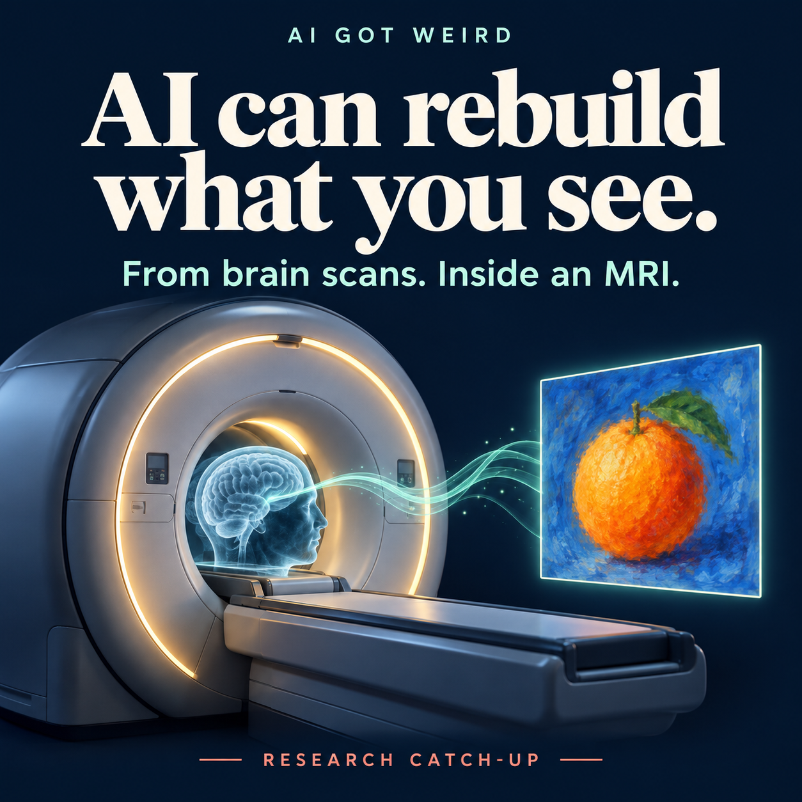
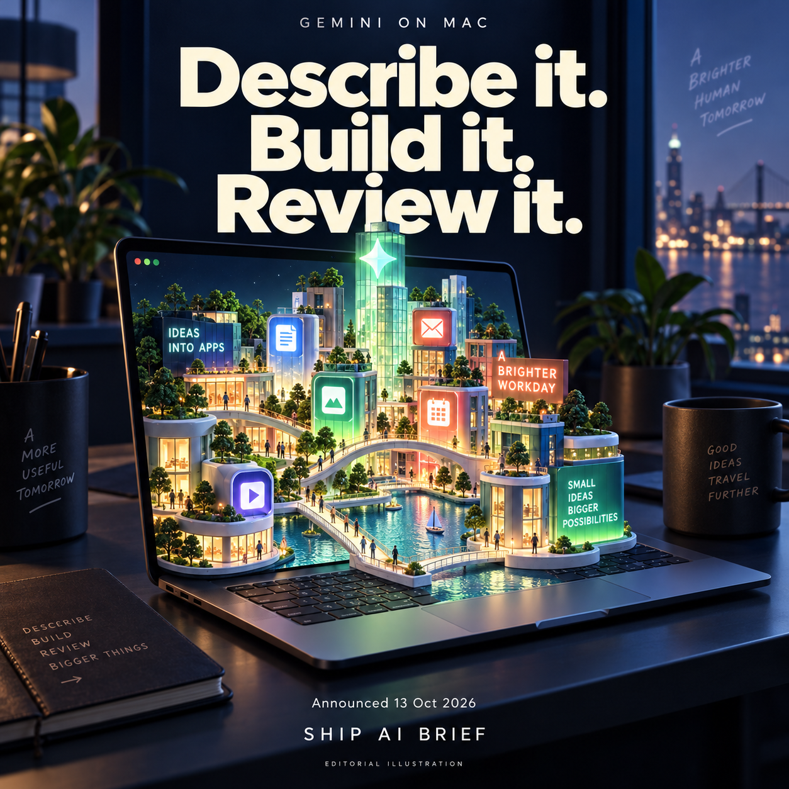
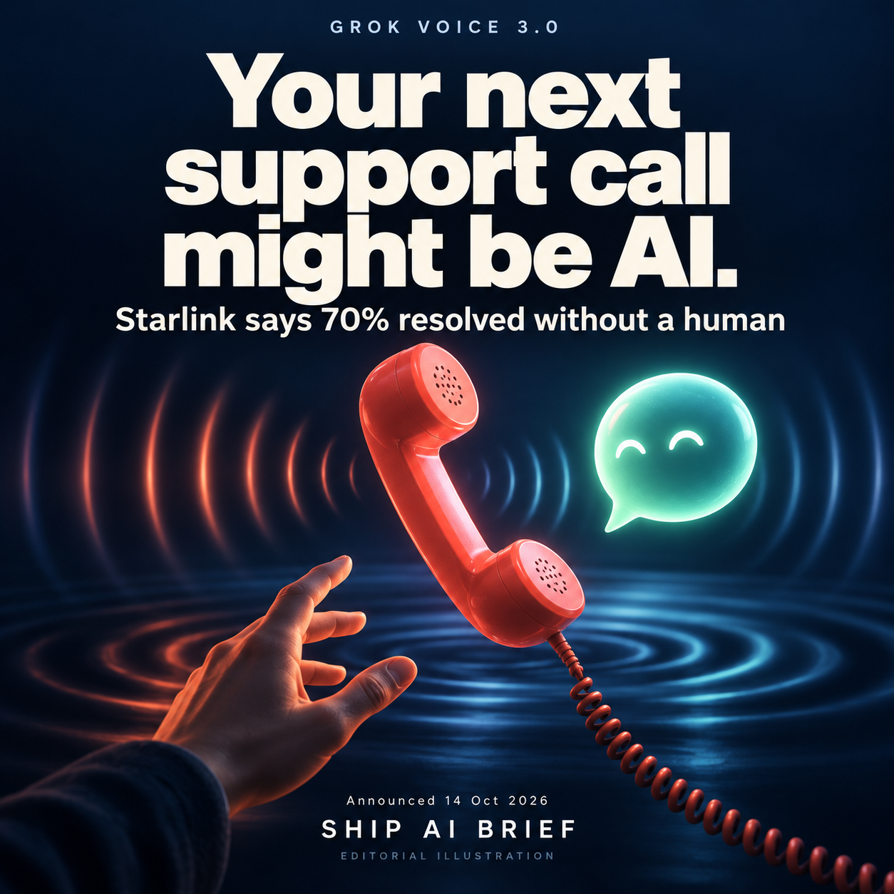
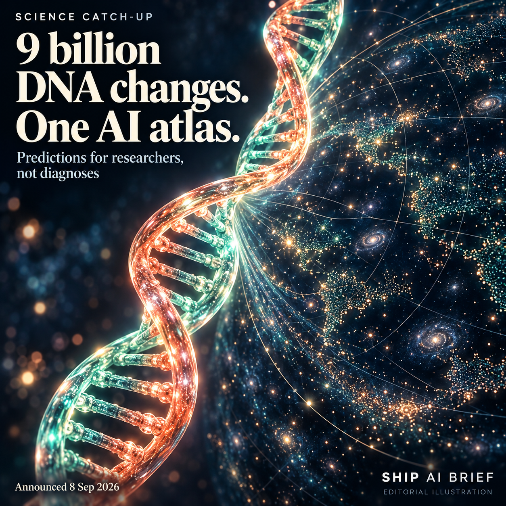

AI can rebuild what you see.
You look at a picture. An AI rebuilds it from your brain scan. Brain-IT reconstructs viewed images from fMRI recordings. In the researchers' tests, one hour of data from a new participant gave results comparable to methods trained on 40 hours. The catch: this needs an MRI scanner and training data. It does not demonstrate reading arbitrary thoughts or dreams.
Research catch-up: paper first posted 29 Oct 2025; university coverage 14 Sep 2026.
Read the paper ↗University coverage ↗Share this story ↗
Describe it. Build it. Review it.
Have an app idea stuck in Notes? Google has added Antigravity to Gemini on Mac: approve a plan and a coding agent builds and tests in the background. Our take: a shorter path to a first prototype, with human review still essential. English, ages 18+, eligible accounts and supported regions. Announced 13 Oct 2026; we have not tested it hands-on.
Read the original source ↗Share this story ↗
Your next support call might be AI.
Grok Voice 3.0 launched on 14 Oct. Its announcement says Starlink uses Grok Voice for 20,000 calls a day, with roughly 70% resolved without a human. Those are company-reported figures for Grok Voice in use, not a measured improvement from the new release. Our take: fixing the problem matters more than sounding human.
Read the original source ↗Share this story ↗
9 billion DNA changes. One AI atlas.
Science catch-up, announced 8 Sep 2026. AlphaGenome Atlas maps predictions for 9 billion possible single-letter DNA changes, with a free academic research portal. Our take: it helps researchers choose what to investigate in the lab. Predictions are not diagnoses or cures; the tool is not approved for clinical use.
Read the original source ↗Share this story ↗